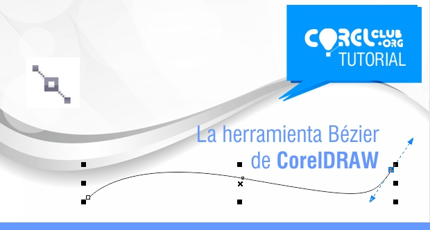
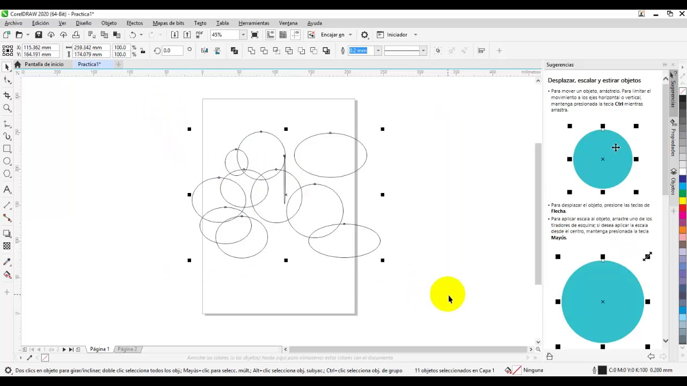

Explora las herramientas básicas y cómo usarlas en tus proyectos creativos
Permite crear líneas curvas o rectas con precisión punto por punto.
Con estas herramientas puedes crear formas básicas como rectángulos, cuadrados, óvalos y círculos.
Dibuja líneas libres como si usaras un lápiz real, ideal para bocetos y trazos rápidos.

Rellena zonas cerradas con color de manera automática, muy útil en ilustraciones.

Agrega texto artístico o de párrafo. Puedes cambiar fuentes, tamaño, color y estilo.